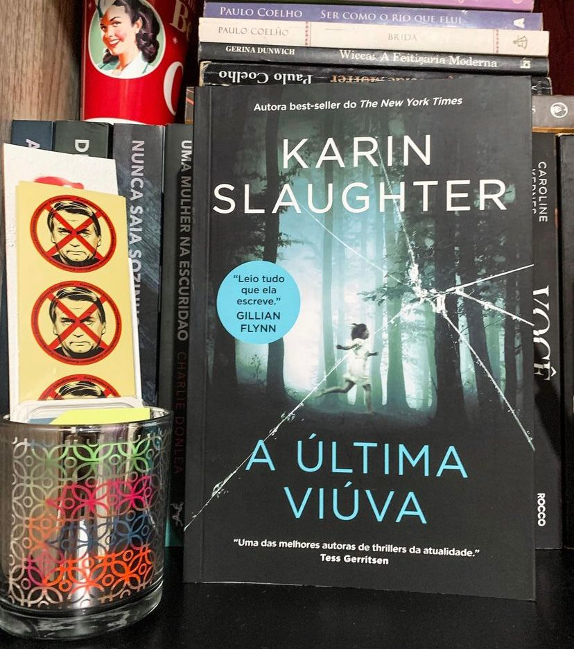

A Última Viúva
(Karin Slaughter - HarperCollins)
⭐⭐⭐⭐⭐
⚠️Gatilho:Abuso Sexual. Violência.
A Última viúva foi o meu primeiro contato com Karin Slaughter e me apaixonei. A autora consegue criar tramas interessantes, com temas pesados, detalhes perturbadores sem forçar a barra e tudo isso com um enredo completamente factível.
Quando uma tarde de domingo é interrompida pelo som de duas explosões, o agente especial Will Trent e sua namorada, a médica Sara Linton, seguem seus primeiros impulsos: prestar socorro e investigar. No entanto, eles não imaginavam quais seriam as consequências de seguir seus instintos à risca. O cenário piora rapidamente quando, em meio ao caos, Sara é sequestrada. Will, então, precisa encontrá-la enquanto se infiltra na organização terrorista para investigar os ataques. Ele acaba descobrindo segredos que comprometem a segurança de milhares de pessoas. E, entre salvar o país e sua namorada, Will Trent não se decidirá por nada menos que os dois.
Primeiro, quero dizer que A Última Viúva faz parte da série de livros sobre Will Trent e teoricamente teria uma ordem mas, nem todos os livros da autoras foram publicados no Brasil e a narrativa é construída de uma forma que você não se sente perdido ao ler a obra. Pelo menos eu não me senti. O livro me prendeu do começo ao fim, a narrativa é muito bem construída e mesmo acontecendo várias coisas ao mesmo tempo e surgindo pistas a todo momento a autora consegue explicar e amarrar todas as pontas de forma satisfatória.
Estou ansiosa pra conhecer outros títulos de Karin, que parece já ter consagrado seu nome no mundo dos thrillers!